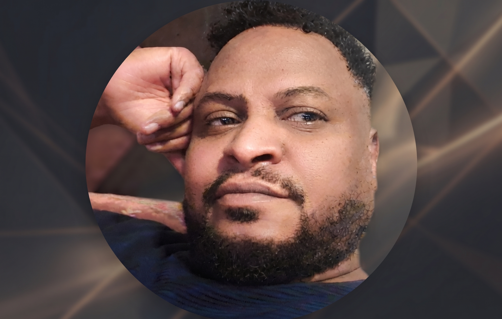

الوحدة 01
عتاد الحاسوب
اختيار وتجميع أنظمة كاملة — معالج، لوحة أم، ذاكرة عشوائية، تبريد ومزود طاقة، تم اختيارها وتركيبها بشكل مستقل.
ملف تعريفي / بورتفوليو
متخصص معلوماتية · تطوير برمجيات · عتاد حاسوب
أنهيت دراستي في علوم الحاسوب، وواصلت منذ ذلك الحين التطور العملي: طوّرت مشاريع برمجية خاصة بي، وفهمت عتاد الحاسوب حتى أدق تفاصيله وقمت بتجميعه بنفسي. مستعد لتوظيف هذه المعرفة في بيئة عمل تقنية.

01 — عني
أنهيت دراستي في علوم الحاسوب عام 1998 في الخرطوم (السودان)، وأعيش في ألمانيا منذ عام 2016. طوال هذه السنوات لم أتوقف يوماً عن الاهتمام بالتقنية — بل على العكس: نفّذت مشاريع برمجية حقيقية بشكل مستقل، واكتسبت معرفة عملية عميقة بعتاد الحاسوب، بما في ذلك التجميع الكامل لحاسوب عالي الأداء بنفسي.
هذا المزيج بين الأساس النظري والخبرة العملية التي اكتسبتها بنفسي هو جوهر ما أرغب في تقديمه لمهمة مهنية جديدة: فهم تقني، دقة في التفاصيل، والقدرة على شرح الأمور المعقدة ببساطة.
ما قمت به في ألمانيا حتى الآن
إلى جانب تطوري التقني، عملت في ألمانيا بشكل مستمر وتحمّلت مسؤوليات فعلية — من ذلك العمل في خدمات التوصيل والقيادة وكذلك في لوجستيات المستودعات.
عرض المسار المهني02 — المهارات
الوحدة 01
اختيار وتجميع أنظمة كاملة — معالج، لوحة أم، ذاكرة عشوائية، تبريد ومزود طاقة، تم اختيارها وتركيبها بشكل مستقل.
الوحدة 02
تطوير تطبيق سطح مكتب لتحرير الفيديو والصوت بدعم الذكاء الاصطناعي، يشمل تحرير الصور والتعرف على النصوص واختبارات آلية.
الوحدة 03
مواقع ويب منظمة وثنائية اللغة باستخدام HTML وCSS وJavaScript — نظيفة، متجاوبة، وبدون اعتماديات غير ضرورية.
الوحدة 04
تطوير ذاتي مستمر على مدى سنوات — تعلّم تقنيات جديدة بشكل مستقل وتطبيقها مباشرة في مشاريع حقيقية.
03 — المشاريع
المشروع 01
تطبيق سطح مكتب لتحرير الفيديو والصوت بدعم الذكاء الاصطناعي: تحويل النص إلى فيديو، توليد الصوت، ترجمة تلقائية، وتحرير الصور في واجهة واحدة.
المشروع 02
موقع ويب مؤسسي ثنائي اللغة (إنجليزي/عربي) لشركة استشارية — تم تصميمه وتنفيذه بشكل مستقل بهوية بصرية واضحة.
المشروع 03
تجميع كامل ومستقل لحاسوب عالي الأداء: اختيار المكوّنات، التحقق من التوافق، والتركيب — من التخطيط وحتى أول تشغيل للنظام.
04 — تواصل
يسعدني تلقي رسالتك — سواء لمقابلة عمل، أو استفسار، أو مجرد تواصل مهني.